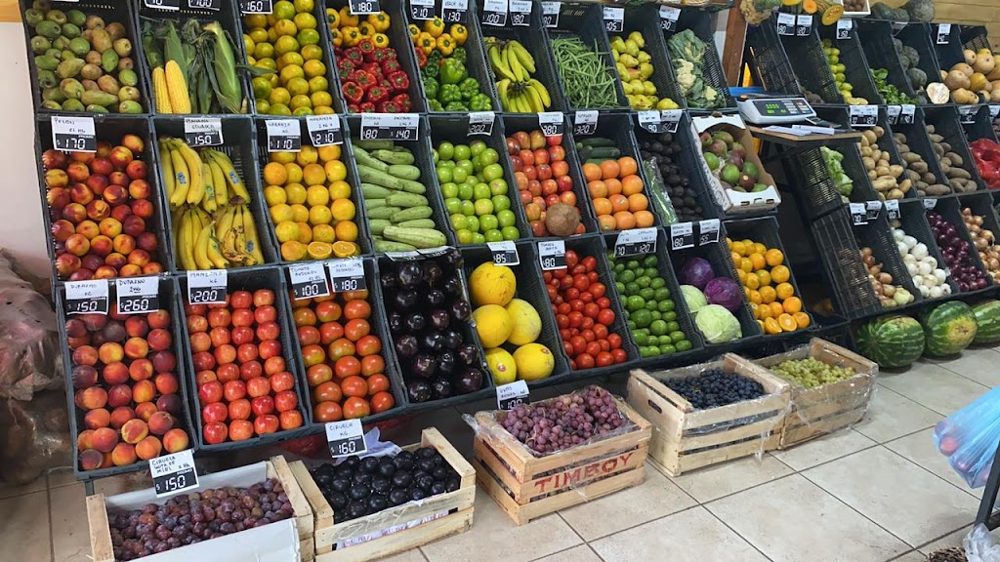

AVENIDA TALLERES 832 CORDOBA|3513778403
En Verdulería Cara e’ Papa queremos brindarte lo mejor de nuestra tierra. Llevar a tu mesa alimentos frescos y de calidad es nuestra tradición familiar, y sabemos lo importante que es poder experimentar el placer de cocinar, saborear y compartir con los nuestros. Es por eso que seleccionamos rigurosamente cada una de nuestras frutas y verduras que llegarán a tu mesa cada día. Somos la primera y única verdulería de Cordoba que cuenta con un mercado de frutas y verduras online. Es práctico, conveniente y confiable. Te llevamos a la puerta de tu casa productos 100% frescos. Te ahorramos el tiempo de salir de compras para que puedas disfrutar haciendo lo que te apasiona.